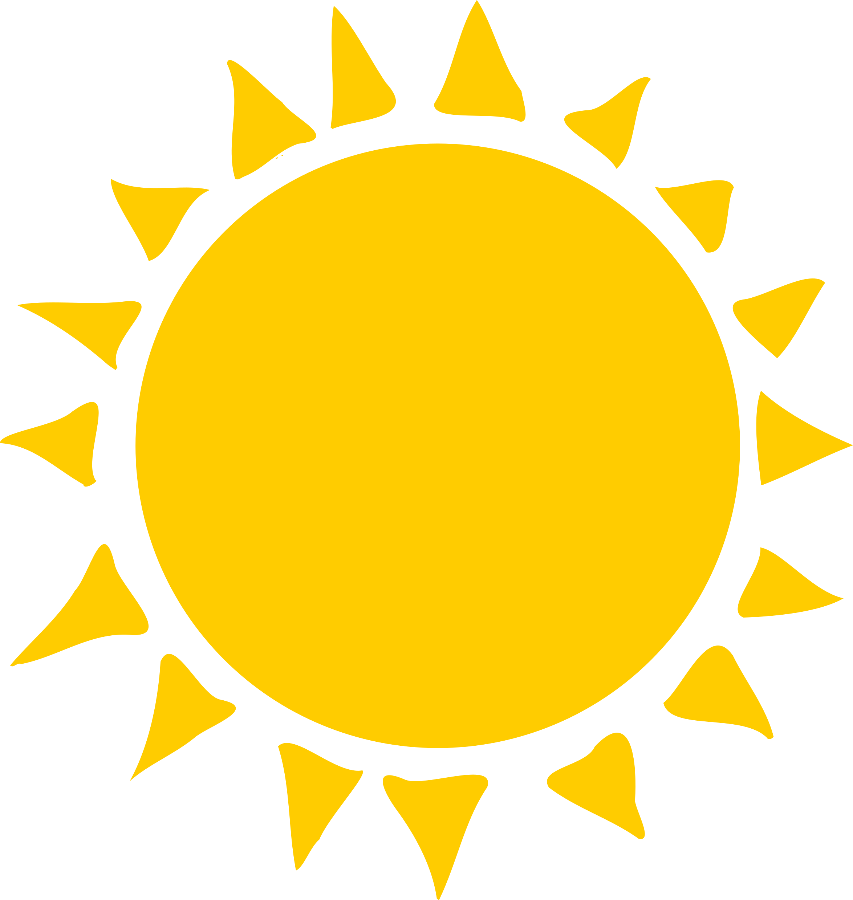

Berlin, Germany
Tuesday, July 14th, 2026

20°
Feels Like
18°
Humidity
46%
Wind
14 Km/h
Percipitation
0 mm
Daily Forecast
Tue
20°
12°
Wed
20°
12°
Thu
20°
12°
Fri
20°
12°
Sat
20°
12°
Sun
20°
12°
Mon
20°
12°
Hourly forecast
1 PM
10°
2 PM
10°
3 PM
10°
4 PM
10°
5 PM
10°
6 PM
10°
7 PM
10°
8 PM
10°